Manual: Nonlinear Design
Nonlinear Model
In this example, the goal is to control the angular position $θ$ of a pendulum attached to a motor. Knowing that the manipulated input is the motor torque $τ$ in Nm, the I/O vectors are:
\[\begin{aligned} \mathbf{u} &= τ \\ \mathbf{y} &= θ \end{aligned}\]
The following figure presents the system:
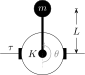
The plant model is nonlinear:
\[\begin{aligned} \dot{θ}(t) &= ω(t) \\ \dot{ω}(t) &= -\frac{g}{L}\sin\big( θ(t) \big) - \frac{K}{m} ω(t) + \frac{1}{m L^2} τ(t) \end{aligned}\]
in which $g$ is the gravitational acceleration in m/s², $L$, the pendulum length in m, $K$, the friction coefficient at the pivot point in kg/s, and $m$, the mass attached at the end of the pendulum in kg, all bundled in the parameter vector $\mathbf{p} = [\begin{smallmatrix} g & L & K & m \end{smallmatrix}]'$. The NonLinModel constructor assumes by default that the state function f is continuous in time, that is, an ordinary differential equation system (like here):
using ModelPredictiveControlfunction f(x, u, _ , p) g, L, K, m = p # [m/s²], [m], [kg/s], [kg] θ, ω = x[1], x[2] # [rad], [rad/s] τ = u[1] # [Nm] dθ = ω dω = -g/L*sin(θ) - K/m*ω + τ/m/L^2 return [dθ, dω]endh(x, _ , _ ) = [180/π*x[1]] # [°]p_model = [9.8, 0.4, 1.2, 0.3]nu, nx, ny, Ts = 1, 2, 1, 0.1vu, vx, vy = ["\$τ\$ (Nm)"], ["\$θ\$ (rad)", "\$ω\$ (rad/s)"], ["\$θ\$ (°)"]model = setname!(NonLinModel(f, h, Ts, nu, nx, ny; p=p_model); u=vu, x=vx, y=vy)NonLinModel with a sample time Ts = 0.1 s:
├ solver: RungeKutta(4)
├ jacobian: AutoForwardDiff
└ dimensions:
├ 1 manipulated inputs u
├ 2 states x
├ 1 outputs y
└ 0 measured disturbances dThe output function $\mathbf{h}$ converts the $θ$ angle to degrees. Note that special characters like $θ$ can be typed in the Julia REPL or VS Code by typing \theta and pressing the <TAB> key. The parameter p can be of any type but use a mutable type like a vector of you want to modify it later. A 4th order RungeKutta method solves the differential equations by default. It is good practice to first simulate model using sim! as a quick sanity check:
using Plotsu = [0.5]N = 35res = sim!(model, N, u)plot(res, plotu=false)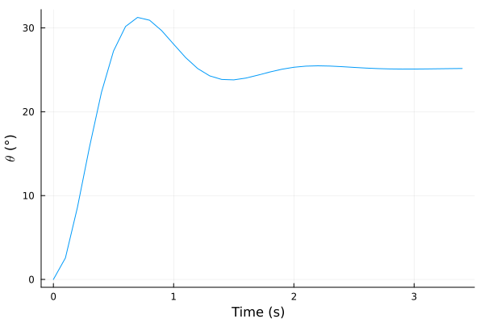
The setname! function allows customized Y-axis labels. The available plotting options are detailed in the documentation of the corresponding plot method.
Nonlinear Model Predictive Controller
An UnscentedKalmanFilter estimates the plant state :
α=0.01; σQ=[0.1, 1.0]; σR=[5.0]; nint_u=[1]; σQint_u=[0.1]estim = UnscentedKalmanFilter(model; α, σQ, σR, nint_u, σQint_u)UnscentedKalmanFilter estimator with a sample time Ts = 0.1 s:
├ model: NonLinModel
├ direct: true
└ dimensions:
├ 1 manipulated inputs u (1 integrating states)
├ 3 estimated states x̂
├ 1 measured outputs ym (0 integrating states)
├ 0 unmeasured outputs yu
└ 0 measured disturbances dThe vectors σQ and σR are the standard deviations of the process and sensor noises, respectively. The value for the velocity $ω$ is higher here (σQ second value) since $\dot{ω}(t)$ equation includes an uncertain parameter: the friction coefficient $K$. Also, the argument nint_u explicitly adds one integrating state at the model input, the motor torque $τ$, with an associated standard deviation σQint_u of 0.1 N m. The estimator tuning is tested on a plant with a 25 % larger friction coefficient $K$:
p_plant = copy(p_model)p_plant[3] = 1.25*p_model[3]plant = setname!(NonLinModel(f, h, Ts, nu, nx, ny; p=p_plant); u=vu, x=vx, y=vy)res = sim!(estim, N, [0.5], plant=plant, y_noise=[0.5])plot(res, plotu=false, plotxwithx̂=true)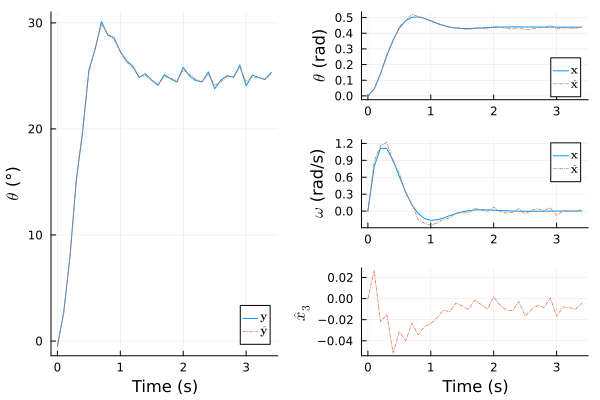
The estimate $x̂_3$ is the integrating state on the torque $τ$ that compensates for static errors. The Kalman filter performance seems sufficient for control.
As the motor torque is limited to -1.5 to 1.5 N m, we incorporate the input constraints in a NonLinMPC:
Hp, Hc, Mwt, Nwt = 20, 2, [0.5], [2.5]nmpc = NonLinMPC(estim; Hp, Hc, Mwt, Nwt, Cwt=Inf)umin, umax = [-1.5], [+1.5]nmpc = setconstraint!(nmpc; umin, umax)NonLinMPC controller with a sample time Ts = 0.1 s:
├ estimator: UnscentedKalmanFilter
├ model: NonLinModel
├ optimizer: Ipopt
├ transcription: SingleShooting
├ gradient: AutoForwardDiff
├ jacobian: AutoForwardDiff
├ hessian: nothing
└ dimensions:
│ ├ 20 prediction steps Hp
│ ├ 2 control steps Hc
│ ├ 1 manipulated inputs u (1 integrating states)
│ ├ 3 estimated states x̂
│ ├ 1 measured outputs ym (0 integrating states)
│ ├ 0 unmeasured outputs yu
│ └ 0 measured disturbances d
└ optimization:
├ 2 decision variables Z̃ (0 slack variable, 0 bounds)
├ 40 linear inequality constraints A (0 custom)
├ 0 linear equality constraints Aeq
├ 0 nonlinear inequality constraints g (0 custom)
└ 0 nonlinear equality constraints geqThe option Cwt=Inf disables the slack variable ϵ for constraint softening. By default, NonLinMPC controllers use Ipopt and a direct SingleShooting transcription method to solve the optimal control problem. We test mpc performance on plant by imposing an angular setpoint of 180° (inverted position):
res_ry = sim!(nmpc, N, [180.0], plant=plant, x_0=[0, 0], x̂_0=[0, 0, 0])plot(res_ry)The controller seems robust enough to variations on $K$ coefficient. Starting from this inverted position, the closed-loop response to a step disturbances of 10° is also satisfactory:
res_yd = sim!(nmpc, N, [180.0], plant=plant, x_0=[π, 0], x̂_0=[π, 0, 0], y_step=[10])plot(res_yd)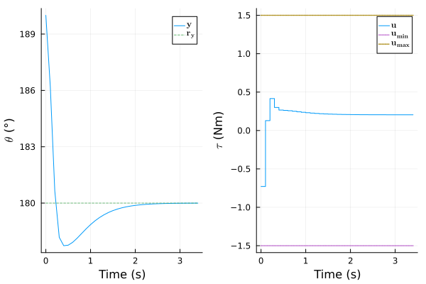
See sim! documentation for details on the possible simulation scenarios.
Economic Model Predictive Controller
Economic MPC can achieve the same objective but with lower economical costs. For this case study, the controller will aim to reduce the energy consumed by the motor. The power in watt transmitted by the motor to the pendulum is:
\[P(t) = τ(t) ω(t)\]
Thus, the work in joule done by the motor from $t = t_0$ to $t_{end}$ is:
\[W = \int_{t_0}^{t_{end}} P(t) \mathrm{d}t = \int_{t_0}^{t_{end}} τ(t) ω(t) \mathrm{d}t\]
With the sampling time $T_s$ in s, the prediction horizon $H_p$, the limits defined as $t_0 = k T_s$ and $t_{end} = (k+H_p) T_s$, and the left-endpoint rectangle method for the integral, we get:
\[W ≈ T_s \sum_{j=0}^{H_p-1} τ(k + j) ω(k + j)\]
The objective function will now include an additive term that penalizes the work done by the motor $W$ to reduce the energy consumption. Notice that $W$ is a function of the manipulated input $τ$ and the angular speed $ω$, a state that is not measured (only the angle $θ$ is measured here). As the arguments of NonLinMPC economic function JE do not include the states, the speed is now defined as an unmeasured output to design a Kalman Filter similar to the previous one ($\mathbf{y^m} = θ$ and $\mathbf{y^u} = ω$):
h2(x, _ , _ ) = [180/π*x[1], x[2]]nu, nx, ny = 1, 2, 2model2 = setname!(NonLinModel(f, h2, Ts, nu, nx, ny; p=p_model), u=vu, x=vx, y=[vy; vx[2]])plant2 = setname!(NonLinModel(f, h2, Ts, nu, nx, ny; p=p_plant), u=vu, x=vx, y=[vy; vx[2]])estim2 = UnscentedKalmanFilter(model2; σQ, σR, nint_u, σQint_u, i_ym=[1])UnscentedKalmanFilter estimator with a sample time Ts = 0.1 s:
├ model: NonLinModel
├ direct: true
└ dimensions:
├ 1 manipulated inputs u (1 integrating states)
├ 3 estimated states x̂
├ 1 measured outputs ym (0 integrating states)
├ 1 unmeasured outputs yu
└ 0 measured disturbances dThe plant2 object based on h2 is also required since sim! expects that the output vector of plant argument corresponds to the model output vector in mpc argument. We can now define the $J_E$ function and the empc controller:
function JE(Ue, Ŷe, _ , p, _ ) Ts = p τ, ω = Ue[1:end-1], Ŷe[2:2:end-1] return Ts*sum(τ.*ω)endempc = NonLinMPC(estim2; Hp, Hc, Nwt, Mwt=[0.5, 0], Cwt=Inf, Ewt=3.5e3, JE=JE, p=Ts)empc = setconstraint!(empc; umin, umax)NonLinMPC controller with a sample time Ts = 0.1 s:
├ estimator: UnscentedKalmanFilter
├ model: NonLinModel
├ optimizer: Ipopt
├ transcription: SingleShooting
├ gradient: AutoForwardDiff
├ jacobian: AutoForwardDiff
├ hessian: nothing
└ dimensions:
│ ├ 20 prediction steps Hp
│ ├ 2 control steps Hc
│ ├ 1 manipulated inputs u (1 integrating states)
│ ├ 3 estimated states x̂
│ ├ 1 measured outputs ym (0 integrating states)
│ ├ 1 unmeasured outputs yu
│ └ 0 measured disturbances d
└ optimization:
├ 2 decision variables Z̃ (0 slack variable, 0 bounds)
├ 40 linear inequality constraints A (0 custom)
├ 0 linear equality constraints Aeq
├ 0 nonlinear inequality constraints g (0 custom)
└ 0 nonlinear equality constraints geqThe keyword argument Ewt weights the economic costs relative to the other terms in the objective function. The term must be large enough to be significant but a too high value can lead to a static error on the angle setpoint. The second element of Mwt is zero since the speed $ω$ is not requested to track a setpoint. The closed-loop response to a 180° setpoint is similar:
res2_ry = sim!(empc, N, [180, 0], plant=plant2, x_0=[0, 0], x̂_0=[0, 0, 0])plot(res2_ry, ploty=[1])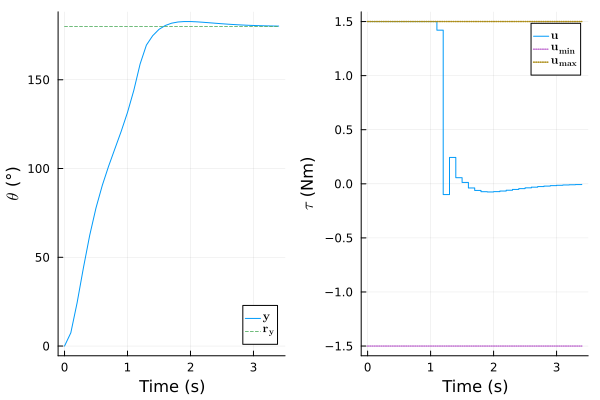
and the energy consumption is slightly lower:
function calcW(res) τ, ω = res.U_data[1, 1:end-1], res.X_data[2, 1:end-1] return Ts*sum(τ.*ω)endDict(:W_nmpc => calcW(res_ry), :W_empc => calcW(res2_ry))Dict{Symbol, Float64} with 2 entries:
:W_empc => 3.90053
:W_nmpc => 3.92078Also, for a 10° step disturbance:
res2_yd = sim!(empc, N, [180; 0]; plant=plant2, x_0=[π, 0], x̂_0=[π, 0, 0], y_step=[10, 0])plot(res2_yd, ploty=[1])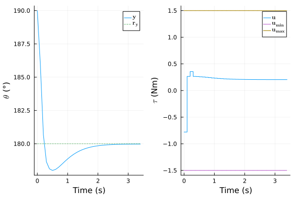
the new controller is able to recuperate a little more energy from the pendulum (i.e. negative work):
Dict(:W_nmpc => calcW(res_yd), :W_empc => calcW(res2_yd))Dict{Symbol, Float64} with 2 entries:
:W_empc => -0.0542454
:W_nmpc => -0.0440395Of course, this gain is only exploitable if the motor electronic includes some kind of regenerative circuitry.
Custom Nonlinear Inequality Constraints
In addition to the torque limits, suppose that the motor can deliver a maximum of 3 watt:
\[P(t) = τ(t) ω(t) ≤ P_\mathrm{max}\]
with $P_\mathrm{max} = 3$ W. This inequality describes nonlinear constraints that can be implemented using the custom $\mathbf{g_c}$ function of NonLinMPC. The constructor expects a function in this form:
\[\mathbf{g_c}(\mathbf{U_e}, \mathbf{Ŷ_e}, \mathbf{D̂_e}, \mathbf{p}, ϵ) ≤ \mathbf{0}\]
in which $ϵ$ is the slack variable (scalar), an necessary feature to ensure feasibility when the nonlinear inequality constraints are active. There is also an additional LHS argument ("left-hand side" of the inequality above) for the in-place version:
function gc!(LHS, Ue, Ŷe, _, p, ϵ) Pmax = p i_τ, i_ω = 1, 2 for i in eachindex(LHS) τ, ω = Ue[i_τ], Ŷe[i_ω] P = τ*ω LHS[i] = P - Pmax - ϵ i_τ += 1 i_ω += 2 end return nothingendHere we implemented the custom nonlinear constraint function in the mutating form to reduce the computational burden (see NonLinMPC Extended Help for details). Note that similar mutating forms are also possible for the f and h functions of NonLinModel. We construct the controller by enabling relaxation with the Cwt argument, and also by specifying the number of custom inequality constraints nc:
Cwt, Pmax, nc = 1e5, 3, Hp+1nmpc2 = NonLinMPC(estim2; Hp, Hc, Nwt=Nwt, Mwt=[0.5, 0], Cwt, gc!, nc, p=Pmax)nmpc2 = setconstraint!(nmpc2; umin, umax)NonLinMPC controller with a sample time Ts = 0.1 s:
├ estimator: UnscentedKalmanFilter
├ model: NonLinModel
├ optimizer: Ipopt
├ transcription: SingleShooting
├ gradient: AutoForwardDiff
├ jacobian: AutoForwardDiff
├ hessian: nothing
└ dimensions:
│ ├ 20 prediction steps Hp
│ ├ 2 control steps Hc
│ ├ 1 manipulated inputs u (1 integrating states)
│ ├ 3 estimated states x̂
│ ├ 1 measured outputs ym (0 integrating states)
│ ├ 1 unmeasured outputs yu
│ └ 0 measured disturbances d
└ optimization:
├ 3 decision variables Z̃ (1 slack variable, 1 bounds)
├ 40 linear inequality constraints A (0 custom)
├ 0 linear equality constraints Aeq
├ 21 nonlinear inequality constraints g (21 custom)
└ 0 nonlinear equality constraints geqIn addition to the 180° setpoint response:
res3_ry = sim!(nmpc2, N, [180; 0]; plant=plant2, x_0=[0, 0], x̂_0=[0, 0, 0]);a plot for the power $P(t)$ is included below:
function plotWithPower(res, Pmax) t, τ, ω = res.T_data, res.U_data[1, :], res.X_data[2, :] P, Pmax = τ.*ω, fill(Pmax, size(t)) plt1 = plot(res, ploty=[1]) plt2 = plot(t, P, label=raw"$P$", ylabel=raw"$P$ (W)", xlabel="Time (s)", legend=:right) plot!(plt2, t, Pmax, label=raw"$P_\mathrm{max}$", linestyle=:dot, linewidth=1.5) return plot(plt1, plt2, layout=(2,1))endplotWithPower(res3_ry, Pmax)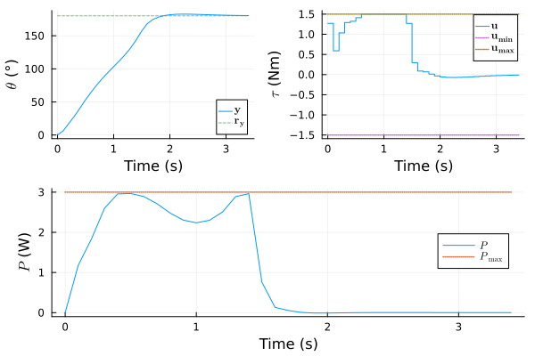
The controller is able to find a solution that does not violate the torque and power constraints.
Model Linearization
Nonlinear MPC is more computationally expensive than LinMPC. Solving the problem should always be faster than the sampling time $T_s = 0.1$ s for real-time operation. This requirement is sometimes hard to meet on electronics or mechanical systems because of the fast dynamics. To ease the design and comparison with LinMPC, the linearize function allows automatic linearization of NonLinModel defaulting to ForwardDiff. We first linearize model at the point $θ = π$ rad and $ω = τ = 0$ (inverted position):
linmodel = linearize(model, x=[π, 0], u=[0])LinModel with a sample time Ts = 0.1 s:
└ dimensions:
├ 1 manipulated inputs u
├ 2 states x
├ 1 outputs y
└ 0 measured disturbances dA SteadyKalmanFilter and a LinMPC are designed from linmodel:
skf = SteadyKalmanFilter(linmodel; σQ, σR, nint_u, σQint_u)mpc = LinMPC(skf; Hp, Hc, Mwt, Nwt, Cwt=Inf)mpc = setconstraint!(mpc, umin=[-1.5], umax=[+1.5])LinMPC controller with a sample time Ts = 0.1 s:
├ estimator: SteadyKalmanFilter
├ model: LinModel
├ optimizer: OSQP
├ transcription: SingleShooting
└ dimensions:
│ ├ 20 prediction steps Hp
│ ├ 2 control steps Hc
│ ├ 1 manipulated inputs u (1 integrating states)
│ ├ 3 estimated states x̂
│ ├ 1 measured outputs ym (0 integrating states)
│ ├ 0 unmeasured outputs yu
│ └ 0 measured disturbances d
└ optimization:
├ 2 decision variables Z̃ (0 slack variable, 0 bounds)
├ 40 linear inequality constraints A (0 custom)
└ 0 linear equality constraints AeqThe linear controller satisfactorily rejects the 10° step disturbance:
res_lin = sim!(mpc, N, [180.0]; plant, x_0=[π, 0], y_step=[10])plot(res_lin)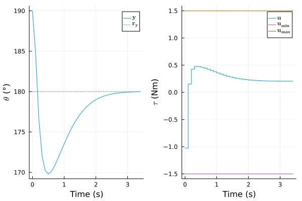
Solving the optimization problem of mpc with DAQP optimizer instead of the default OSQP solver can improve the performance here. It is indeed documented that DAQP can perform better on small/medium dense matrices and unstable poles[1], which is obviously the case here (absolute value of unstable poles are greater than one):
using LinearAlgebra; poles = eigvals(linmodel.A)2-element Vector{Float64}:
0.48163285653799215
1.3963025601286745To install the solver, run:
using Pkg; Pkg.add("DAQP")Constructing a LinMPC with DAQP:
using JuMP, DAQPdaqp = Model(DAQP.Optimizer, add_bridges=false)mpc2 = LinMPC(skf; Hp, Hc, Mwt, Nwt, Cwt=Inf, optim=daqp)mpc2 = setconstraint!(mpc2; umin, umax)LinMPC controller with a sample time Ts = 0.1 s:
├ estimator: SteadyKalmanFilter
├ model: LinModel
├ optimizer: DAQP
├ transcription: SingleShooting
└ dimensions:
│ ├ 20 prediction steps Hp
│ ├ 2 control steps Hc
│ ├ 1 manipulated inputs u (1 integrating states)
│ ├ 3 estimated states x̂
│ ├ 1 measured outputs ym (0 integrating states)
│ ├ 0 unmeasured outputs yu
│ └ 0 measured disturbances d
└ optimization:
├ 2 decision variables Z̃ (0 slack variable, 0 bounds)
├ 40 linear inequality constraints A (0 custom)
└ 0 linear equality constraints Aeqdoes slightly improve the rejection of the step disturbance:
res_lin2 = sim!(mpc2, N, [180.0]; plant, x_0=[π, 0], y_step=[10])plot(res_lin2)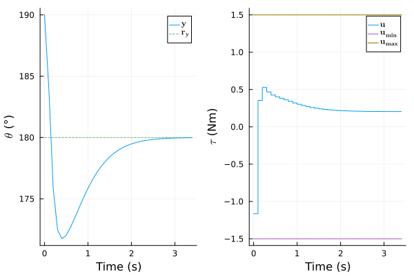
Additionally, similar results are obtained by using a sparse MultipleShooting transcription, which is known to be more robust for unstable systems, with a solver that can explicilty handle sparsity like the default OSQP:
mpc_ms = LinMPC(skf; Hp, Hc, Mwt, Nwt, Cwt=Inf, transcription=MultipleShooting())mpc_ms = setconstraint!(mpc_ms, umin=[-1.5], umax=[+1.5])LinMPC controller with a sample time Ts = 0.1 s:
├ estimator: SteadyKalmanFilter
├ model: LinModel
├ optimizer: OSQP
├ transcription: MultipleShooting
└ dimensions:
│ ├ 20 prediction steps Hp
│ ├ 2 control steps Hc
│ ├ 1 manipulated inputs u (1 integrating states)
│ ├ 3 estimated states x̂
│ ├ 1 measured outputs ym (0 integrating states)
│ ├ 0 unmeasured outputs yu
│ └ 0 measured disturbances d
└ optimization:
├ 62 decision variables Z̃ (0 slack variable, 0 bounds)
├ 40 linear inequality constraints A (0 custom)
└ 60 linear equality constraints AeqSuperimposing the previous disturbance rejection to the newer one gives almost identical results:
res_ms = sim!(mpc_ms, N, [180.0]; plant, x_0=[π, 0], y_step=[10])plot!(res_ms)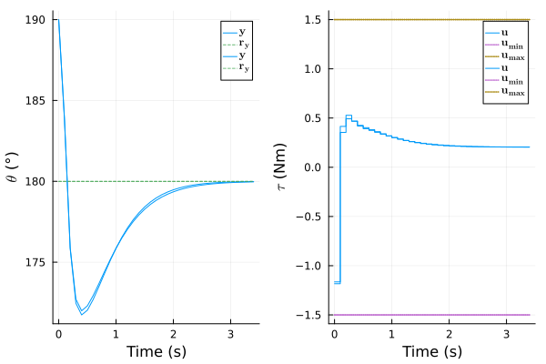
The closed-loop performances are still lower than the nonlinear controller, as expected, but computations are about 210 times faster (0.000071 s versus 0.015 s per time steps, on average). However, remember that linmodel is only valid for angular positions near 180°. For example, the 180° setpoint response from 0° is unsatisfactory since the predictions are poor in the first quadrant:
res_lin3 = sim!(mpc2, N, [180.0]; plant, x_0=[0, 0])plot(res_lin3)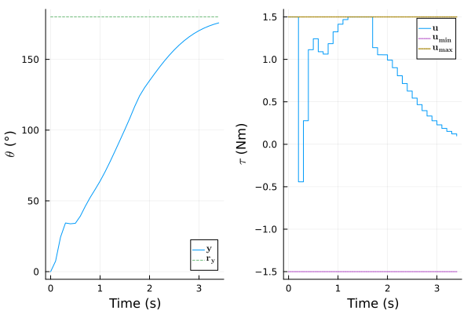
Multiple linearized model and controller objects are required for large deviations from this operating point. This is known as gain scheduling. Another approach is adapting the model of the LinMPC instance based on repeated online linearization.
Adapting the Model via Successive Linearization
The setmodel! method allows online adaptation of a linear plant model. Combined with the automatic linearization of linearize, a successive linearization MPC can be designed with minimal efforts. The SteadyKalmanFilter does not support setmodel! so we need to use the time-varying KalmanFilter, and we initialize it with a linearization at $θ = ω = τ = 0$:
linmodel = linearize(model, x=[0, 0], u=[0])kf = KalmanFilter(linmodel; σQ, σR, nint_u, σQint_u)mpc3 = LinMPC(kf; Hp, Hc, Mwt, Nwt, Cwt=Inf, optim=daqp)mpc3 = setconstraint!(mpc3; umin, umax)LinMPC controller with a sample time Ts = 0.1 s:
├ estimator: KalmanFilter
├ model: LinModel
├ optimizer: DAQP
├ transcription: SingleShooting
└ dimensions:
│ ├ 20 prediction steps Hp
│ ├ 2 control steps Hc
│ ├ 1 manipulated inputs u (1 integrating states)
│ ├ 3 estimated states x̂
│ ├ 1 measured outputs ym (0 integrating states)
│ ├ 0 unmeasured outputs yu
│ └ 0 measured disturbances d
└ optimization:
├ 2 decision variables Z̃ (0 slack variable, 0 bounds)
├ 40 linear inequality constraints A (0 custom)
└ 0 linear equality constraints AeqWe create a function that simulates the plant and the adaptive controller:
function sim_adapt!(mpc, nonlinmodel, N, ry, plant, x_0, x̂_0, y_step=[0]) U_data, Y_data, Ry_data = zeros(plant.nu, N), zeros(plant.ny, N), zeros(plant.ny, N) setstate!(plant, x_0) initstate!(mpc, [0], plant()) setstate!(mpc, x̂_0) for i = 1:N y = plant() + y_step x̂ = preparestate!(mpc, y) u = moveinput!(mpc, ry) linmodel = linearize(nonlinmodel; u, x=x̂[1:2]) setmodel!(mpc, linmodel) U_data[:,i], Y_data[:,i], Ry_data[:,i] = u, y, ry updatestate!(mpc, u, y) # update mpc state estimate updatestate!(plant, u) # update plant simulator end res = SimResult(mpc, U_data, Y_data; Ry_data) return resendThe setmodel! method must be called after solving the optimization problem with moveinput! and before updating the state estimate with updatestate!, that is, when both $\mathbf{u}(k)$ and $\mathbf{x̂}_{k}(k)$ are available as the new operating point. The SimResult object is for plotting purposes only. The adaptive LinMPC performances are similar to the nonlinear MPC, both for the 180° setpoint:
x_0 = [0, 0]; x̂_0 = [0, 0, 0]; ry = [180]res_slin = sim_adapt!(mpc3, model, N, ry, plant, x_0, x̂_0)plot(res_slin)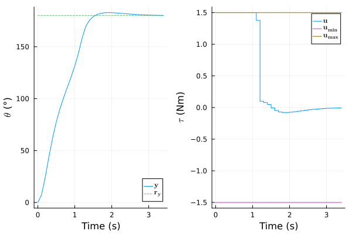
and the 10° step disturbance:
x_0 = [π, 0]; x̂_0 = [π, 0, 0]; y_step = [10]res_slin = sim_adapt!(mpc3, model, N, ry, plant, x_0, x̂_0, y_step)plot(res_slin)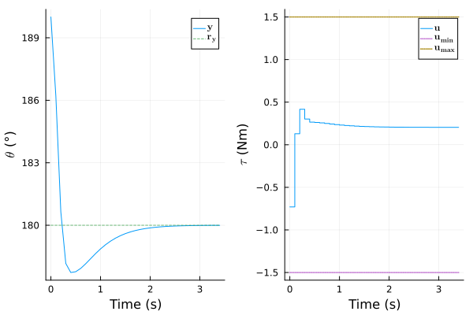
The computations of the successive linearization MPC are about 75 times faster than the nonlinear MPC on average, an impressive gain for similar closed-loop performances!
- 1Arnström, D., Bemporad, A., and Axehill, D. (2022). A dual active-set solver for embedded quadratic programming using recursive LDLᵀ updates. IEEE Trans. Autom. Contr., 67(8). https://doi.org/doi:10.1109/TAC.2022.3176430.